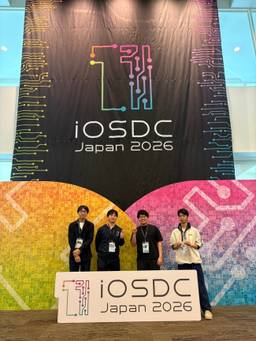

OPTiM TECH BLOG
https://tech-blog.optim.co.jp/
オプティムの企業テックブログ。OPTiMのエンジニアが技術情報を発信。AIの最新動向からクラウドのアーキテクチャ、Web開発、モバイルアプリ開発まで多様な技術を紹介。AI・IoTプラットフォームや、農業、医療、建設向けサービスを実現しています。
フィード

iOSDC 2026 の参加レポート：会場の雰囲気と気になったセッションのまとめ
OPTiM TECH BLOG
本記事ではiOSDC 2026に参加したOPTiMのエンジニア4名が、各セッションから得た実践的な学びをレポートします。Swift 6やSwiftUIを用いた巨大アプリのモダン化、CoreBluetoothによるメッシュ型チャットの実装と失敗談、AIへのコンテキスト設計など、現場で活かせる知見を紹介します。
4日前

点群を「理解」する LLM — GreenPLMやSAGEに見る3DマルチモーダルLLMの最新アプローチ
OPTiM TECH BLOG
点群データを解釈できる3D MLLM（PointLLM・GreenPLM・SAGE）を、MacBook Pro（M4 Pro / RAM 48GB）のローカルMPS環境で実際に動かした検証記事です。GreenPLMではCUDA専用拡張をPyTorchで書き直す方法や、dtype不一致によるMPSエラーへの対処法も紹介。実測ではGreenPLMがモデルロード1.4〜2.8秒・1応答0.6〜8.3秒とPointLLMより一貫して高速でした。「3Dエンコーダをどう扱うか」という設計の軸で3手法の精度・速度・実行可否を比較しています。
17日前
「OPTiM Frontend Meetup #1」を開催しました
OPTiM TECH BLOG
2026年7月17日に開催したフロントエンド技術に特化した社外向けイベント「OPTiM Frontend Meetup #1」を開催しました。本イベントは、全社横断組織として発足した「フロントエンド推進室」初の社外向けMeetupです。当日は、フロントエンドエンジニアによる6本のLTを実施。テーマはTanStack Start、デザインシステム運用、PWAの新要素 <install>、Next.js 16のCache Components、AI時代のフレームワーク移行、Playwrightを活用した品質保証など多岐にわたり、現場で得られた実践的な知見が共有されました。各セッションでは、型安全なフロントエンド開発、デザインシステム運用の自動化、ブラウザ技術の最新動向、パフォーマンス改善事例、AI活用による開発スタイルの変化、継続的な品質保証など、現代のフロントエンド開発に欠かせないトピックが取り上げられました。LT終了後には懇親会も開催され、参加者同士の交流を通じて知見共有を深めました。オプティムは今後も技術コミュニティへの貢献を続けるとともに、フロントエンド推進室の活動やイベント情報を発信していく予定です。
1ヶ月前
TSKaigi 2026に協賛・参加してきました
OPTiM TECH BLOG
本記事では、OPTiMメンバーが参加・協賛した国内最大級のTypeScriptカンファレンス「TSKaigi 2026」の様子を紹介しています。会場では、TypeScriptの型システムや静的解析、AIとの協働など幅広いテーマのセッションが展開され、特にAI時代における型の価値に注目が集まりました。OPTiMからはエンジニアが登壇し、ドット絵エディタの実装を題材に、要件に応じたシンプルかつ適切な設計判断の重要性を共有しました。また、参加者が印象に残ったセッションとして、型安全なルーティングの仕組み、オブザーバビリティの実践、Reactのコンポーネント設計、型システムを活用した複雑ドメインの表現、テスト戦略などが紹介されています。全体を通して、「型による不正状態の排除」「要件に応じた設計選択」「変更容易性を高めるための設計とテスト」といった共通のテーマが浮かび上がり、実務に活かせる知見が多く得られたカンファレンスであることが伝えられています。さらに、技術発信やコミュニティ貢献の重要性にも触れ、今後の取り組みへの意欲が述べられています。
4ヶ月前
LLMから点群、Rustでの最適化まで！2025年サマーインターン (R&D) まとめ
OPTiM TECH BLOG
オプティムのR&Dユニットによる2025年サマーインターンの内容紹介記事。計9名が参加し、自然言語処理（LLM・RAG）、三次元点群処理、画像処理（農業）、組合せ最適化といった幅広い分野のテーマに取り組んだ。各テーマでは最新技術の検証やプロダクトへの応用に近い実践的な課題に挑戦し、RAG精度改善やLiDARキャリブレーション評価、地図画像マッチング、最適化ソルバの高速化・精度向上などの成果を挙げた。特に最適化分野では最大100倍の高速化を達成するなど、インターン生・メンター双方にとって学びの多い機会となった。参加者からは、実データを使った開発やAI活用、企業の雰囲気理解などへの高い満足度が寄せられている。
4ヶ月前
Managed KubernetesユーザーがCKA(Certified Kubernetes Administrator)を受験した話
OPTiM TECH BLOG
本記事では、Managed Kubernetes（EKS）を運用する立場のエンジニアが、CKA（Certified Kubernetes Administrator）に挑戦・合格した経験を通じて得た学びを紹介しています。Kubernetesの基礎理解、とくにコントロールプレーンなど「一段下のレイヤー」への理解不足を感じたことをきっかけに受験を決意。3週間の学習期間で公式ドキュメントを軸に学習し、killer.shによる模擬試験で課題を洗い出しました。資格取得を通じて、Kubernetesの基礎知識が体系的に身についただけでなく、「一次情報を確認する」というエンジニアとして重要な習慣が定着した点が大きな成果として語られています。Managed Kubernetesを使っているが基礎に不安がある人にとって、CKAは挑戦する価値のある資格であるとまとめています。
5ヶ月前
RubyKaigi 2026へ参加&スポンサーしました！
OPTiM TECH BLOG
オプティムのエンジニアが、Rubyコミュニティ最大の国際カンファレンス「RubyKaigi 2026」（函館）に参加したレポートです。プラチナスポンサーとしてブース出展し、「Ruby Method Guessr」というCRuby内部実装を題材にしたクイズ企画を実施。来場者との交流や技術的な盛り上がりが伝えられています。セッション紹介では、テスト効率化の新手法、大規模数値計算の最適化、DJコントローラーを使った新しいUI、Ruby×Web Audioによる音楽生成、ファミコン上で動くRuby、Ruby内部設計の議論、リアクティブERB、ドキュメント設計の課題など、多様なテーマを取り上げています。特に共通しているのは、パフォーマンス改善・開発体験向上・適用領域の拡張といったRubyの進化の方向性です。記事は、Ruby 4.0時代の到来とともに、AI時代におけるRubyの可能性や今後の展望を示し、オプティムもそれに寄り添って技術成長を続ける姿勢を表明して締めくくられています。
5ヶ月前
try! Swift Tokyo 2026 参加レポート 注目セッションと会場の雰囲気
OPTiM TECH BLOG
本記事は、OPTiMのエンジニア3名が「try! Swift Tokyo 2026」に参加したレポートです。印象に残ったセッションとしては、ユーザーへの思いやり（caring）を開発の軸に据える重要性iOS 26の新デザイン「Liquid Glass」を現場でどう扱うかという実践的知見Swiftをベアメタル環境で活用するEmbedded Swiftの可能性といった、設計思想・UI/UX・技術的進化の3方向からの学びが共有されています。単なる技術紹介にとどまらず、「誰のための開発か」「標準を活かす判断」「Swiftの将来性」といった視点で、日々の開発を見直すきっかけとなる内容です。
5ヶ月前
AI をチーム開発フローに組み込んだら何が変わったか
OPTiM TECH BLOG
本記事では、OPTiM Support & Growth Portal（SGP）チームにおける AI を開発フロー全体に組み込んだ実践事例を紹介しています。個人のコード補完にとどまらず、設計・実装・レビューの各フェーズで AI を活用し、開発プロセスそのものを再設計しました。設計フェーズでは、Skills（チーム知識）を活用して 機能仕様書の自動生成・不足点の洗い出し・図の作成を行い、仕様書を起点にした共通認識づくりを実現しました。さらに MCP を用いて、仕様書から Redmine チケットの自動起票や更新までを効率化しています。実装フェーズでは、Skills / Rules による 実装ルールの標準化を進め、実装者ごとの差やレビューでの規約指摘を削減。レビュー前提の叩き台生成や BFF 実装の自動化により、大幅な工数削減も実現しています。レビューフェーズでは、セルフレビュー・MR レビュー・修正対応を AI で自動化。さらに Codex Automations による **レビューの定期実行（バッチ化）**にも挑戦し、割り込みコストの削減を図っています。その結果、開発スピードと品質の両立を実現できた一方で、例外処理や設計判断では 人間の確認が不可欠であること、そして プロンプト設計の重要性といった課題も明らかになりました。AI を個人最適ではなく チーム全体で再現可能な運用に落とし込むことの価値を示す内容です。
5ヶ月前
企業向けマルチテナントサービスにおけるmTLSとVPN活用事例
OPTiM TECH BLOG
本記事では、AWS上のマルチテナント型サービスを顧客拠点へ安全に提供するためのネットワーク構成について、mTLSとVPNの2つのアプローチを比較・整理しています。mTLSではALBとNginx間で相互認証を行い、アプリケーションレイヤーで接続元を限定する方法を解説しています。一方VPNでは、拠点間をネットワークレイヤーで接続することで双方向通信が可能になる点を特徴として紹介しています。特に、マルチテナント環境で問題になりやすいCIDR重複への対応として、プロキシVPCを用いた送信元IPアドレスの置き換え手法を詳述し、VPC Endpoint＋Route 53 Resolverによる片方向通信の構成EC2プロキシ＋Transit Gatewayによる双方向通信の構成という2つの具体例を示しています。要件に応じてmTLSとVPNを使い分け・併用することの重要性を示し、企業向けマルチテナントサービスにおけるネットワーク方式選定の指針を提供する内容となっています。
6ヶ月前
Figma MCPだけではUIは作れない ── AIに不足していた知識の正体と補い方
OPTiM TECH BLOG
本記事は、「AIにUIを作らせたい」というフロントエンドエンジニアの素朴な関心から始まり、Figma MCPを用いたUI自動生成の実験と、その失敗・改善プロセスを詳細にまとめた実践記録です。当初はFigma MCP単体での生成精度に限界があり、MUIやデザイントークン、React設計、各種ライブラリ知識など、AIに不足している前提知識が多数あることが明らかになりました。その後、AIモデルの進化やMUI MCPの登場によって一部課題が自然解決し、残る課題に対して Agent Skills を用いてデザイントークンや設計ルール、ライブラリの使い方をAIに明示的に教えるアプローチを採用。さらに few-shot として正しい実装例をExampleカタログ化し、AIに参照させることで、誤った既存実装に引きずられないUI生成を実現しました。最終的には、設計段階からAIと対話しながら進めるSkillsも導入し、ほぼ修正不要なUIを10分程度で生成できるレベルに到達。AIによるUI自動生成において重要なのは「AIに与える知識の整理」「課題に応じたツール選択」「一気に解決しようとしない戦略的姿勢」であると結論づけています。
6ヶ月前
OSS LGTMスタック運用の視点で読み解く、Grafana Observability CON 2026 Tokyo 参加レポート
OPTiM TECH BLOG
本記事は、Grafana Labs 主催の 「Grafana Observability CON 2026 Tokyo」 に参加したレポートです。イベントを通して、オブザーバビリティが単なる「監視・可視化」から、「運用判断や改善を支援するプラットフォーム」へと進化していることが強調されていました。特に印象的だったのは、Knowledge Graph と RCA Workbench による根本原因分析の高速化、Grafana Assistant を中心としたエージェント型 AI による調査支援、そして Adaptive Telemetry / Adaptive Trace による実践的なコスト最適化です。また、OpenTelemetry 導入を支える Instrumentation Hub や、フロントエンド・ユーザー体験まで含めた E2E 可観測性の重要性も語られていました。筆者の所属するオプティムの Kubernetes 基盤「Cavor」では OSS の LGTM スタックを運用しているため、Grafana Cloud の方向性を「既存構成をどう発展させるか」という視点で捉え、すぐに試せそうな点（テレメトリ最適化や E2E の可観測性強化）と、前提整備が必要な点（AI 活用や Knowledge Graph）を整理しています。本記事は、イベント内容の紹介にとどまらず、実運用にどう結びつけるか、将来的にどのような観測基盤を目指すべきかを考察した実践的なレポートとなっています。
6ヶ月前
GNSS測位の精度を高める！誤差要因の解説とベストな観測条件の考察
OPTiM TECH BLOG
本記事では、GNSS（衛星測位）を用いた高精度測位において発生する主要な誤差要因と、その影響を抑えるための最適な観測条件について解説しています。GNSS 誤差は、電離圏・対流圏といった大気の影響、建物などによるマルチパス、衛星配置（DOP）、相対測位時の基線長など、複数の要因が複雑に絡み合って生じます。特に夜間や冬季、オープンスカイな設置環境、静穏な太陽活動下では精度が安定しやすいことが分かっています。また、大雨などの荒天が測位精度に与える影響や、季節変動による精度差についても論文ベースで紹介し、GNSS 測位結果を正しく評価するための実践的な視点を提供しています。
6ヶ月前
✨非デザイナーでも“オプティムっぽい”UIデザインは、作れる！✨
OPTiM TECH BLOG
本記事では、オプティムのUIデザインチームが推進する「AIを前提としたUIデザインプロセス構築」の取り組みを紹介しています。生成AIの普及により誰でも簡易なUIを作れるようになる一方、デザインシステムと整合しないアウトプットが生まれる課題も増えています。これを解消するため、オプティムでは v0 のデザインシステム設定、Figma MCPによるコード生成の精度向上、nucleusガイドラインのMarkdown化といった“AIが正しく利用できる環境整備”を進めています。v0にnucleusのカラーパレットやコンポーネントルールを組み込むことで、非デザイナーでもnucleusらしいUIラフの生成が可能に。Figma MCPの導入では、FigmaデータをAIが構造的に理解してコード化できるため、画面設計書作成や新規実装が大幅に効率化されました。さらに、nucleusをMarkdownで構造化することで、AIが正しく参照できるデザインルール基盤も整備されています。これらの取り組みを通じ、初期デザイン作成の高速化、手戻り削減、実装との連携強化が進み、最終的には“AIと人が共創するデザインプロセス”の実現を目指しています。
7ヶ月前
Reactグラフ表示ライブラリの選定
OPTiM TECH BLOG
AIチャットボット「OPTiM AIRES」の新機能として、回答率や回答方式(RAG・モデル知識)を可視化するダッシュボードを実装するために、フロントエンドのグラフ描画ライブラリを選定したプロセスを紹介した記事。まず SVG vs Canvas、Vanilla JSライブラリ vs Reactライブラリ を比較し、要件（棒グラフ・折れ線・複合・積み上げ・2軸・Tooltip・同期ハイライトなど）を満たせる技術を検討。SVGのインタラクティブ性やReactとの親和性から、React用グラフライブラリに絞り込む。5つの主要ライブラリ（Recharts、MUI X Charts、Victory、Nivo、Ant Design Charts）を比較した結果、カスタマイズ性・実績・実装コストのバランスが最も良い Recharts を採用。技術選定で得られた知見やライブラリ比較のポイントを丁寧にまとめつつ、実際に実装した複合グラフのコード例も掲載
7ヶ月前
プロダクト開発とOSS貢献を繋ぐ！オプティムでOSS Gateワークショップを開催
OPTiM TECH BLOG
2026年2月13日、オプティムのオフィスで「OSS Gateワークショップ」が開催された。OSS Gateは、OSS 開発に参加する最初の一歩をサポートする取り組みで、参加者は気になっている OSS に触れながら気づきの記録やIssue作成、必要に応じた改善提案などを実践する。開催のきっかけは Rails Tokyo での交流で、オプティムとしても日頃からOSSに支えられる立場として、貢献への心理的ハードルを下げたいという想いがあったためオフィス提供に至った。当日は社内外22名が参加し、実際にREADME改善のIssueが発行されるなど、具体的なアウトプットも生まれた。参加者からは「心理的ハードルが下がった」「今後は使っているOSSに貢献したい」といった声が多く、満足度も高い結果に。ワークショップを通じて「伝わる形で記録を残すことの重要性」も改めて再確認された。オプティムは今後もOSSに自然に触れられる環境づくりを続け、プロダクト開発とOSS貢献を一体として推進していく。
7ヶ月前
デザインと営業をどう繋ぐ？展示会出展を『点』で終わらせないための改善サイクル
OPTiM TECH BLOG
OPTiMプロモーション・デザインユニットは、2025年度に参加した複数の展示会を対象に、「見た目」ではなく「会話が生まれるまでの体験設計」 を軸とした改善サイクルを構築した取り組みを紹介している。展示会制作は属人的になりがちだが、目的整理・体験設計・ビジュアル制作・現場検証・振り返りを共通プロセスとして標準化し、再現性のある展示会運営を実現。DXPO夏/秋、AI-PAX、CSPIなどの事例を通じて、「視認性」「情報の引き算」「課題起点コピー」「属性別導線設計」「動画・ノベルティの活用」など効果の高い学びが整理されている。結果として、来場者導線の明確化、会話創出の増加、高確度リード比率の向上などの成果が得られ、次回に向けてコピー刷新・営業連携強化・サステナブル資材検討などの改善案も提示。展示会を“価値創出の投資先”として継続改善に取り組む姿勢を示す内容となっている。
7ヶ月前
オプティムにおけるPlatform Engineeringの現在地
OPTiM TECH BLOG
本記事では、オプティム社内で利用されている Kubernetes ベースのプラットフォーム「Cavor」について、2023〜2025年度の取り組みと今後の方向性が整理されています。Cavorは、2023年度の立ち上げ、2024年度のマルチテナント化、2025年度の利用促進という3段階を経て、社内プロダクトの標準基盤として利用が拡大してきました。特に2025年度は、Kubecost導入による精緻なコスト把握、監視基盤の強化、認証機能の提供、移行を進めるための機能拡張など、多方面で改善が進められています。一方で、テナント数の増加に伴い可用性やパフォーマンス面の課題も明確になり、後半はそれらの対応にも注力しました。利用の広がりとともに、2026年度はサービス開発統括本部プロダクトのCavor利用率100%を目指す方針が掲げられており、全社的な標準プラットフォーム化が進んでいます。加えて、今後はテナント品質の可視化や改善アシスト、ガードレール強化といった、品質向上をプラットフォーム側から支援する取り組みを進める計画です。さらに、セルフサービス性の向上やドキュメント・モニタリング環境の改善など、利用者からの要望に基づく改善も重要な課題として位置付けられています。AI活用の進展を受け、セルフホスト環境でどのようにAI支援機能を提供していくかといった新たなテーマにも取り組む必要があります。総じて、Cavorは「プロダクト固有ではない課題を吸収し、開発チームが本質に集中できる環境を提供する」ことを価値としており、今後もより使いやすく、高品質なプラットフォームを目指して改善を続けていく姿勢が示されています。
8ヶ月前
React Tokyo ミートアップ #13 参加レポート - フロントエンド開発者のための「厄払い」
OPTiM TECH BLOG
2026年1月23日に開催された「React Tokyo ミートアップ #13」に参加し、オプティムからは高橋さんがメイントーク「フロントエンド開発者のための『厄払い』」で登壇しました。トークでは、Shai‑Hulud などのサプライチェーン攻撃、React Server Components の深刻な脆弱性、pnpm の依存問題など、近年多発するフロントエンド領域の重要セキュリティ課題を「厄」に見立てて解説。多層防御の重要性と、段階的に取り組む現実的な対策が紹介されました。イベントではほかにも、バグ経験を共有するグループディスカッションや、useEffectEvent、oxlint などをテーマにしたLTが行われ、コミュニティならではの学びと交流が広がりました。
8ヶ月前
Next.jsでのロールベースアクセス制御の苦難 - コンポーネント設計を崩さずに実装する権限管理
OPTiM TECH BLOG
本記事では、Next.js App Routerを採用したプロジェクトにおけるフロントエンドでのRBAC（ロールベースアクセス制御）実装について解説しています。RBACを選択した理由、フロントエンド権限管理の課題（Props地獄、API多重呼び出し、UX劣化など）、そしてそれらを解決するための設計パターンを紹介。具体的には、Guardコンポーネントによる責務分離、React.cacheとrevalidateTagを活用したキャッシュ戦略、Layout・Page・Guardによる明確な責務分離、さらにVisibilityBoundaryや将来的なActivity APIの活用可能性についても言及。最後に、ディレクトリ構成やテスト戦略（テーブル駆動テスト）を示し、保守性・テスト性を高める設計の重要性を強調しています。
8ヶ月前
給水アラートを作りました
OPTiM TECH BLOG
オプティム東京オフィスで発生していた「ウォーターサーバーの水切れ問題」をIoTで解決した事例です。新卒エンジニアがM5Stack AtomS3と重量センサーHX711を使い、残水量を計測し、Microsoft Teamsで給水担当者に通知するシステムを開発しました。初代はPower AutomateとExcelで構築しましたが、運用課題（通知過多・Excel性能低下・誤検知）を受け、Node.js＋Hono＋MySQL＋Grafanaを用いたバックエンドサーバーに刷新。自動キャリブレーション機能も追加し、約1年半で18万件のデータを蓄積。給水切れの減少や運用改善に成功し、今後は故障予測への応用も検討中。本事例は「身近な課題をIoTで解決する」取り組みの参考となる内容です。
8ヶ月前
週1共有会で進める！Web制作・フロントエンド改善の6事例
OPTiM TECH BLOG
Web制作チームで始めた「共有会」で、コード運用やAI活用をどう改善したのかを紹介。Git運用やCI/CD、CSS統一など実践事例も！
9ヶ月前
AWS IoT Core + MQTT + Protocol Buffersで実現するメッセージング
OPTiM TECH BLOG
本記事では、オプティムの製品「Hardware My Portal」におけるIoT関連機能の実装事例を紹介しています。MQTT、AWS IoT Core、Protocol Buffersといった技術を採用し、セキュリティやスケーラビリティを確保しながら、データを型安全かつ効率的にやり取りする仕組みを構築しました。記事では、Go言語を用いたMQTTクライアントの実装やAWS IoT Coreの設定、S3へのデータ保存、ルールアクションによるメッセージ処理など、具体的なコード例と構成を詳しく解説しています。最後に、開発を通じて得られた知見や工夫点も共有しています。
9ヶ月前
今日からはじめる知識管理：頑張らないObsidian活用術
OPTiM TECH BLOG
「知識管理（PKM）」と Obsidian の活用法 について、実践例と思想の両面から詳しく紹介しています。前半では、情報と知識の違い、知識管理の必要性、意思決定やコンテキストの重要性など、PKM の本質的な背景を丁寧に解説。後半では、実際の Obsidian を用いたノート構成、推しポイント（ローカルベース・リンク中心の整理・プラグイン拡張）や、Templater / Dataview / Web Clipper / 自作プラグインなどの活用術まで、実践的な内容がまとめられています。さらに、記事内で紹介した Obsidian 構成テンプレートが GitHub で配布されており、今日から PKM を始めたい人にも嬉しい内容となっています。
9ヶ月前
脱React宣言！初心者のためのSvelte×daisyUI入門
OPTiM TECH BLOG
本記事では、モダンなフロントエンド開発を効率化するために、SvelteとdaisyUIを組み合わせる方法を解説します。Svelteは軽量で直感的なUI構築が可能なJavaScriptフレームワークで、ReactやVueと比較してコード量を削減できます。一方、daisyUIはTailwind CSSのプラグインで、豊富なコンポーネントとテーマを提供し、UI開発をシンプルにします。記事では、両者の特徴や利点を紹介し、SvelteKitとdaisyUIのセットアップ手順を詳しく説明。初心者でも簡単に始められる構成で、UI/UXを重視した開発体験を向上させるヒントを提供します。
9ヶ月前
adbコマンド覚えられなくても気にしない。自作MCPサーバーでAIにお任せ！
OPTiM TECH BLOG
本記事では、Android開発初心者の筆者が、AIにadbコマンドの実行を任せるためにMCPサーバーを自作した取り組みを紹介しています。MCPサーバーはAIに外部機能を提供する仕組みで、今回はGo製ライブラリ「mark3labs/mcp-go」を用いて、adbコマンドを実行するツールを実装しました。記事では、サーバー生成・ツール定義・実装・ビルド手順を詳しく解説し、Android StudioのGemini Code Assistとの連携方法も紹介。最後に、実運用に向けた課題（コマンド制御の必要性）や今後の改善方針について述べています。
9ヶ月前
GitLab CIで動くAIエージェント『CI-Agent』を爆速開発！Claude Codeで実現する非同期オペレーションの未来
OPTiM TECH BLOG
本記事では、OPTiM社内ハッカソンで開発された「CI-Agent」について紹介しています。CI-AgentはGitLab CI上で動作するCoding Agentで、issue対応やコード修正、MR作成などを自動化する仕組みを備えています。Claude CodeとAWS Bedrockを活用し、社内GitLab環境に適応した設計を採用。さらに、定型作業を効率化するためのWorkflowディレクトリやプロンプト安全性チェック機能も実装しました。目的は、サービス運用の明文化と非同期オペレーション化を進め、エンジニアの「暇」を創出し、より挑戦的な開発を可能にすることです。記事では、構成や設計思想、課題、今後の展望について詳しく解説しています。
9ヶ月前
常に画面がONになって欲しい瞬間のあるWebアプリへ贈る Screen Wake Lock API
OPTiM TECH BLOG
Webアプリケーションにおいて、画面のロックやスリープを抑制するための Screen Wake Lock API について、バッテリーや省電力モードなどの状況も踏まえた動作確認を行った内容を記事にまとめました
9ヶ月前
フロントエンド推進室の運営メンバーが選ぶフロントエンド小ネタ集
OPTiM TECH BLOG
本記事は OPTiM TECH BLOG Advent Calendar 2025 Day 20 のエントリーで、2025年10月に発足した「フロントエンド推進室」の活動と、運営メンバーによるフロントエンド技術の小ネタを紹介しています。フロントエンド推進室は、社内横断的にフロントエンド技術力を強化することを目的とし、雑談会やOSS活動、社外イベント登壇、同時視聴会などを継続的に実施しています。記事後半では、運営メンバー6名がそれぞれの知見を共有。npm auditやRenovateを活用した脆弱性対策、Storybookで類似コンポーネントを検索しやすくするタグ活用、AIやMCP Serverを使った効率的な学習法、スマホWebアプリでスクロール制御するCSS＋JS実装、開発者ツールのネットワークタブを見やすくする設定など、実践的なTipsが満載です。
9ヶ月前
remark/rehypeでMarkdownがHTMLになるまで：構文木の旅
OPTiM TECH BLOG
本記事では、MarkdownをHTMLに変換する際に利用される remark/rehype の内部処理を深掘りしています。remarkはMarkdownとmdast（Markdown構文木）、rehypeはHTMLとhast（HTML構文木）の相互変換を担い、両者はunifiedパッケージ群に属します。Markdown → mdast → hast → HTMLという変換プロセスを実際のサンプルを用いて解説し、構文木の構造やposition情報の意味を詳しく紹介。また、カスタマイズ機能を追加した場合のmdast/hastの変化についても触れています。MarkdownやHTMLを木構造で扱う仕組みを理解することで、プレビュー機能や拡張機能の実装に役立つ知見が得られます。
9ヶ月前